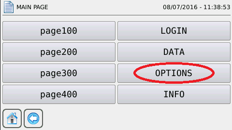
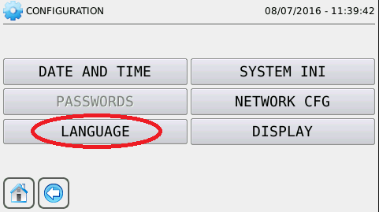
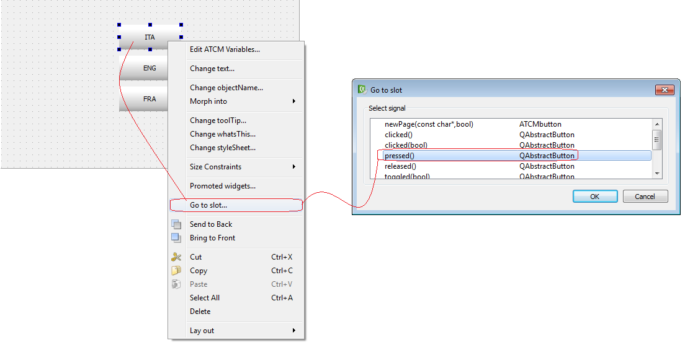
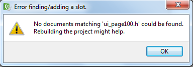

The language selection on the device may occur in two different ways:
By default pages:
In the menu page, select “OPTIONS” → “LANGUAGE”
 
By custom page:
Select an ATCMbutton and right click it, select Go to slot…, pressed() line and press OK.

May appear the following window:

If so you must perform the following steps:
Making the Build Project
Close and reopen the project
Code C++ appears:
void page100::on_atcmButton_3_pressed()
{
}
Insert the following piece of code within the function braces:
if(translator->load(QString(":/translations/languages_it.qm"))) {
QSettings settings(CONFIG_FILE,QSettings::IniFormat);
settings.setValue("SYSTEM/language","it");
settings.sync();
}
else
{
QMessageBox::information(this,trUtf8("errore"),trUtf8("Caricamento lingua"));
}
Repeat these steps for all selections and change only the green parts.
English replace: :/translations/languages_en.qm
French replace: :/translations/languages_fr.qm
WARNING: you must insert in the first part of the file: #include <QSettings>